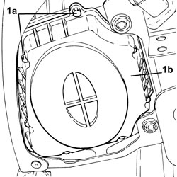
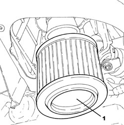

1048A14 AIR CLEANER FILTER ELEMENT - REPLACE.
- Path
- Procedures > 10 ENGINE > 1048 ENGINE AIR SUPPLY CIRCUIT > 1048A VACUUM AIR CIRCUIT > 1048A14 AIR CLEANER FILTER ELEMENT - REPLACE.
- Kind
- repair procedure (removal / refitting; the operation number is the code)
- Applies to
- all engines; all production periods
- Interactive page
- https://sloeber94.github.io/elrnDB-aBrrSpdr/en/#/946001898
Applies to: engines: 2.2 JTS, 3.2 JTS; all production periods
 Removing
Removing
 Refitting
Refitting- Position the vehicle on a lift.
1. Undo the bolts (1a) and remove the air filter cover (1b).

Applies to: engines: 2.2 JTS, 3.2 JTS; all production periods
1. Remove the filter element for the air filter which is a press-fit on the air filter casing centre pipe.

Applies to: engines: 2.2 JTS, 3.2 JTS; all production periods
Refitting
Removing- Position a new air cleaner filter element in its housing.
- Place the air filter cover back in its housing and secure it using the bolts.
- Remove the vehicle from the lift.
Applies to: engines: 2.4 JTD 20v; all production periods
Removing
Refitting- Position the vehicle on a lift.
1. Undo the bolts (1a) and remove the air filter cover (1b).
Applies to: engines: 2.4 JTD 20v; all production periods
1. Remove the filter element for the air filter which is a press-fit on the air filter casing centre pipe.
Applies to: engines: 2.4 JTD 20v; all production periods
Refitting
Removing- Position a new air cleaner filter element in its housing.
- Place the air filter cover back in its housing and secure it using the bolts.
- Remove the vehicle from the lift.
Topics that link to this page (20)
- B010 ENGINE DOES NOT START (UNDER ANY CIRCUMSTANCES)
- D001 ENGINE NOT RUNNING SMOOTHLY / (HESISTANT)
- D002 ENGINE NOT RUNNING SMOOTHLY / (LOSING POWER)
- D005 ENGINE DOES NOT PRODUCE BEST PERFORMANCE
- D010 ENGINE IDLE IRREGULAR
- W010 BLACK EXHAUST FUMES
- W011 EXCESSIVE EXHAUST FUMES
- X001 EXCESSIVE FUEL CONSUMPTION
- 1048OA AIR INTAKE/VACUUM CIRCUIT CHECK
- 0010K30 30,000KM SERVICE
- 0010K60 60,000KM SERVICE
- 0010K90 90,000KM SERVICE
- 0010M20 120,000KM SERVICE
- 0010M50 150,000KM SERVICE
- 0010M80 180,000KM SERVICE
- 1048A10 AIR FILTER ASSEMBLY - R.R.
- 1048A13 AIR FILTER MOUNTING - R.R.
- 1048A23 COLD AIR INTAKE FOR AIR FILTER - R.R
- 1048A40 HOSE FROM AIR FILTER TO FLOW METER - R + R
- 4130B52 HEAT EXCHANGER PIPE - R+R